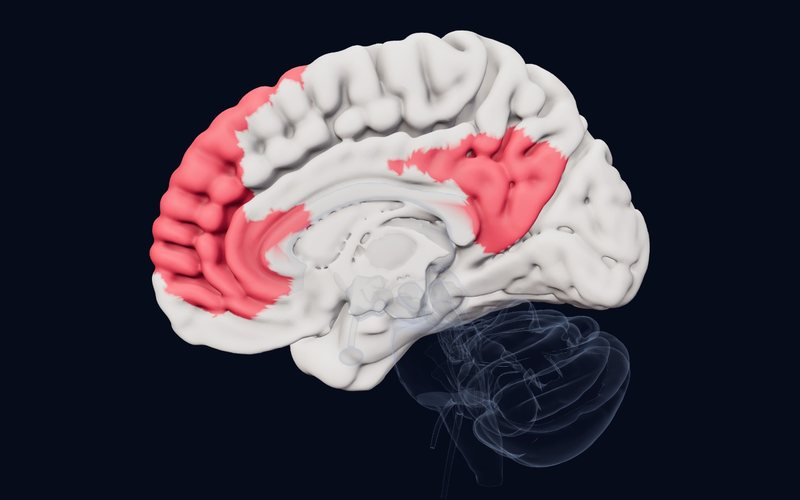
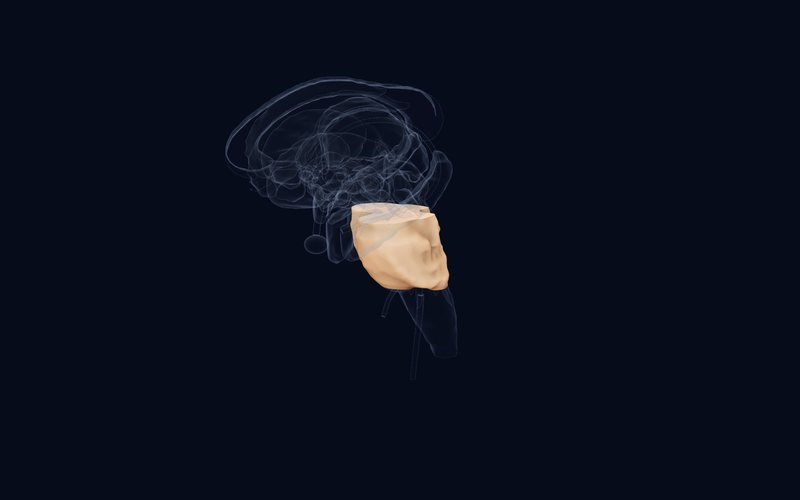

Boletín · Edición 3 · 23 de octubre de 2026
Parar, empezar de nuevo y decidir juntos
Esta edición se centra en el problema de "no poder parar" en el TOC y los tics: dos grandes estudios del mismo consorcio examinan cómo el circuito de control inhibitorio funciona de manera distinta en niños y adultos y cómo se relaciona con la respuesta a la TCC, y un estudio genético encuentra un nuevo locus para los tics. En el apartado de neurociencia, un registro en humanos muestra que una decisión puede surgir no de un cerebro, sino de dos cerebros que se sincronizan.
Los estudios de esta semana
AMegaanálisisBiological Psychiatry2026
En el TOC, el circuito de control inhibitorio funciona en direcciones opuestas en niños y adultos
Adultos 563 TOC / 348 controles, niños 83 TOC / 114 controles (ENIGMA-OCD); en ABCD 343 con TOC probable / 361 controles
DetallesCerrar
 Atlas
Atlas
Hallazgo
El consorcio ENIGMA-OCD reprocesó con un único método los datos de fMRI de tareas de inhibición de respuesta y procesamiento de errores a nivel de participante. Durante el procesamiento de errores, las regiones frontoestriatales fueron menos activas en los adultos con TOC que en los controles, mientras que las redes frontoparietal y de atención fueron más activas en los niños con TOC. A medida que aumentaba la gravedad de los síntomas, la actividad durante la inhibición de respuesta descendía en los adultos y aumentaba en los niños. En la cohorte ABCD, los niños con TOC probable mostraron una actividad más débil de la red frontoparietal en la ínsula anterior y el opérculo frontal.
Por qué es importante
Sugiere que el problema de control inhibitorio en el TOC depende tanto del estado como del desarrollo: trasladar directamente los hallazgos en adultos a los niños puede inducir a error. En el atlas, los hallazgos del circuito del TOC en niños y en adultos pueden seguirse por separado.
Limitación
Datos transversales y tareas distintas entre centros; la muestra infantil es mucho menor que la de adultos.
Džinalija N, van den Heuvel OA, Simpson HB, et al. Inhibitory control and error processing in Obsessive-Compulsive Disorder: A mega-analysis of task-based fMRI data by the ENIGMA-OCD consortium. Biological Psychiatry. 2026. doi:10.1016/j.biopsych.2026.09.021
AMegaanálisisEuropean Neuropsychopharmacology2026
La actividad cerebral antes del tratamiento apunta a la respuesta a la TCC en el TOC, pero aún no es un marcador individual
5 centros, 130 pacientes con TOC, de 8 a 57 años
DetallesCerrar

Atlas
Hallazgo
En cinco muestras de ENIGMA-OCD se comparó la fMRI de control inhibitorio previa al tratamiento de 130 pacientes con la respuesta, la remisión y la reducción de síntomas tras la TCC. Los pacientes que remitieron mostraron una actividad más débil en regiones de la red neuronal por defecto durante la inhibición de respuesta y en el giro supramarginal derecho durante el procesamiento de errores. Quienes tuvieron una mayor reducción de síntomas mostraron una actividad frontoparietal, atencional, visual y subcortical más débil durante la inhibición y una actividad más fuerte de la red neuronal por defecto durante el procesamiento de errores. El aprendizaje automático predijo la respuesta a la TCC solo de forma modesta (AUC 0.66–0.67) y no predijo la remisión por encima del azar.
Por qué es importante
Saber de antemano quién se beneficiará de la TCC es una cuestión clínica central en el TOC; este estudio apunta el camino, pero, como señalan los autores, los hallazgos aún no se han convertido en un marcador utilizable para un paciente individual.
Limitación
Un número pequeño de pacientes, un amplio rango de edad y protocolos de TCC diferentes entre centros.
Džinalija N, van den Heuvel OA, Simpson HB, et al. Predicting cognitive-behavioral therapy outcomes in obsessive-compulsive disorder from inhibitory control neural activity: A mega-analysis and machine learning study from the ENIGMA-OCD consortium. European Neuropsychopharmacology. 2026. doi:10.1016/j.euroneuro.2026.113879
AMegaanálisis, estudio genéticoMolecular Psychiatry2026
Una nueva región genética para los trastornos de tics: la duplicación 17q12
5,725 pacientes con síndrome de Tourette o trastorno de tics persistente, 10,982 controles (tres consorcios)
DetallesCerrar
 Atlas
Atlas
Hallazgo
Se combinaron datos de variantes en el número de copias de tres consorcios de genómica con 3,291 pacientes nuevos, más del doble de la muestra de estudios anteriores. Las deleciones ultrarraras en genes intolerantes a la pérdida de función (OR 1.68) y las variantes en el número de copias del neurodesarrollo conocidas (OR 1.42) fueron más frecuentes en los pacientes que en los controles. Una duplicación en 17q12 emergió como un nuevo locus significativo a nivel de genoma para los trastornos de tics: 8 pacientes y 1 control portaban la duplicación de aproximadamente 1.4 Mb.
Por qué es importante
La duplicación 17q12 es un síndrome conocido con rasgos neuropsiquiátricos variables, pero es la primera vez que se vincula con los tics. Refuerza la idea de que las variantes raras en el número de copias que contienen genes desempeñan un papel sustancial en la genética de los tics.
Limitación
Muy pocas personas portan la duplicación; es demasiado pronto para recomendar pruebas genéticas en pacientes individuales.
Halvorsen MW, Wang S, Miller-Fleming TW, et al. Persistent tic disorders are associated with 17q12 duplications. Molecular Psychiatry. 2026. doi:10.1038/s41380-026-03849-0
CEstudio experimentalNature Neuroscience2026
En la cooperación mutua, las amígdalas de dos personas se vuelven parecidas
Parejas de pacientes con epilepsia registrados simultáneamente con EEG intracraneal
DetallesCerrar
 Atlas
Atlas
Hallazgo
Pacientes con epilepsia portadores de electrodos intracraneales jugaron en parejas a un dilema del prisionero iterado en tiempo real mientras se registraban ambos cerebros a la vez. Los patrones espectrales de grano fino de la amígdala se volvieron similares entre los compañeros solo cuando ambos cooperaban, y esta similitud predijo el resultado de esa ronda. La supresión de baja frecuencia en la amígdala siguió una estimación prospectiva de si el compañero cooperaría, y el acoplamiento theta-gamma vinculó esta estimación con la decisión propia. Los cooperadores condicionales se apoyaban en el seguimiento del compañero, mientras que los cooperadores incondicionales se apoyaban en su tolerancia a la incertidumbre.
Por qué es importante
La amígdala suele asociarse solo con la amenaza y el miedo; este estudio la sitúa en el centro de las decisiones de cooperación y confianza. Señala el papel de la amígdala en la cognición social en la ansiedad social, el autismo y las dificultades de confianza.
Limitación
Un número pequeño de pacientes con epilepsia y sitios de electrodos elegidos por razones clínicas; los hallazgos deben generalizarse a personas sanas con cautela.
Ni J, Meng F, Zhang C, et al. An amygdala-mediated simulation-to-decision cascade aligns interbrain dynamics to solve social dilemmas. Nature Neuroscience. 2026. doi:10.1038/s41593-026-02473-z
Estructura de la semana

Tronco del encéfalo
Pons
El puente entre la corteza y el cerebelo; fuente de noradrenalina (locus coeruleus) y serotonina (rafe), y generador del sueño REM.
Una pregunta para los lectores
A medida que cada nuevo estudio deja más claro que los hallazgos en adultos con TOC no se aplican sin más a los niños, ¿en qué medida considera que las guías que orientan la elección del tratamiento en el TOC infantil se basan en datos específicos de niños?
Puede enviar su respuesta por correo electrónico:
hello@thefoldedmind.comReferencias
- Džinalija N, van den Heuvel OA, Simpson HB, et al. Inhibitory control and error processing in Obsessive-Compulsive Disorder: A mega-analysis of task-based fMRI data by the ENIGMA-OCD consortium. Biological Psychiatry. 2026. doi:10.1016/j.biopsych.2026.09.021
- Džinalija N, van den Heuvel OA, Simpson HB, et al. Predicting cognitive-behavioral therapy outcomes in obsessive-compulsive disorder from inhibitory control neural activity: A mega-analysis and machine learning study from the ENIGMA-OCD consortium. European Neuropsychopharmacology. 2026. doi:10.1016/j.euroneuro.2026.113879
- Halvorsen MW, Wang S, Miller-Fleming TW, et al. Persistent tic disorders are associated with 17q12 duplications. Molecular Psychiatry. 2026. doi:10.1038/s41380-026-03849-0
- Ni J, Meng F, Zhang C, et al. An amygdala-mediated simulation-to-decision cascade aligns interbrain dynamics to solve social dilemmas. Nature Neuroscience. 2026. doi:10.1038/s41593-026-02473-z
Este boletín tiene fines educativos y no constituye consejo médico; consulte a su médico para las decisiones de diagnóstico y tratamiento. Los resúmenes están escritos con nuestras propias palabras a partir de los resúmenes de los estudios y de los textos completos de acceso abierto; consulte el artículo original para los detalles y los resultados definitivos.
Nivel de evidencia (como en el atlas): A consorcio amplio, metaanálisis o decisión regulatoria; B estudios replicados o caso clásico; C estudio único o pionero. Las prepublicaciones no han sido revisadas por pares.